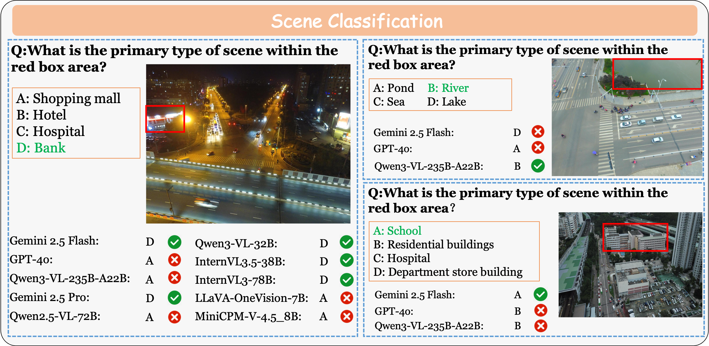
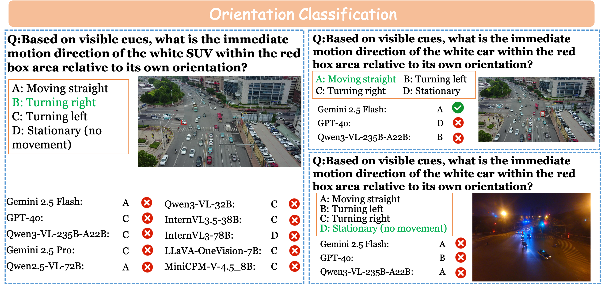
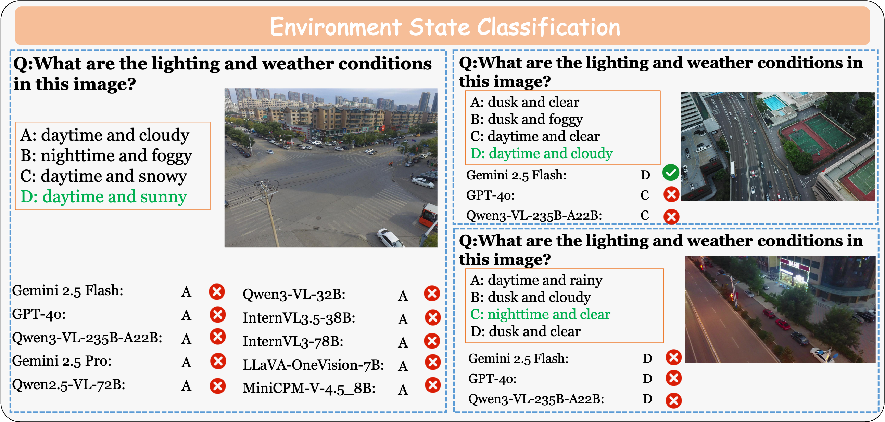
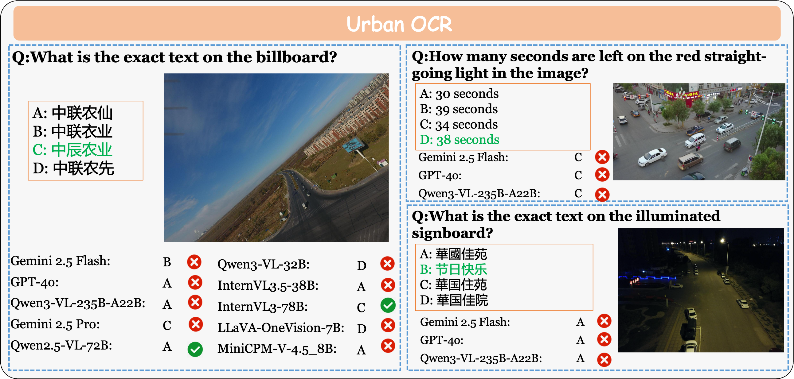
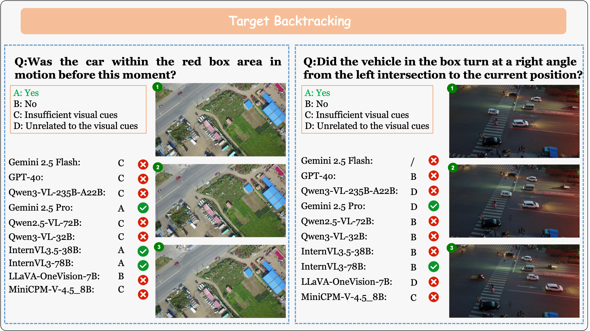
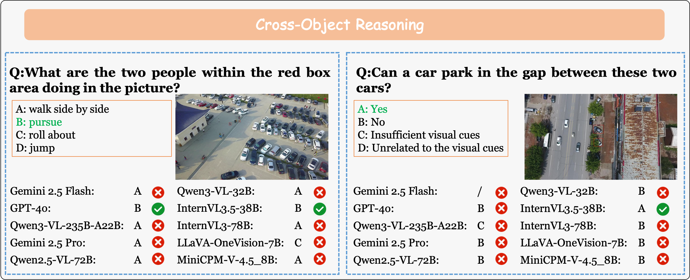
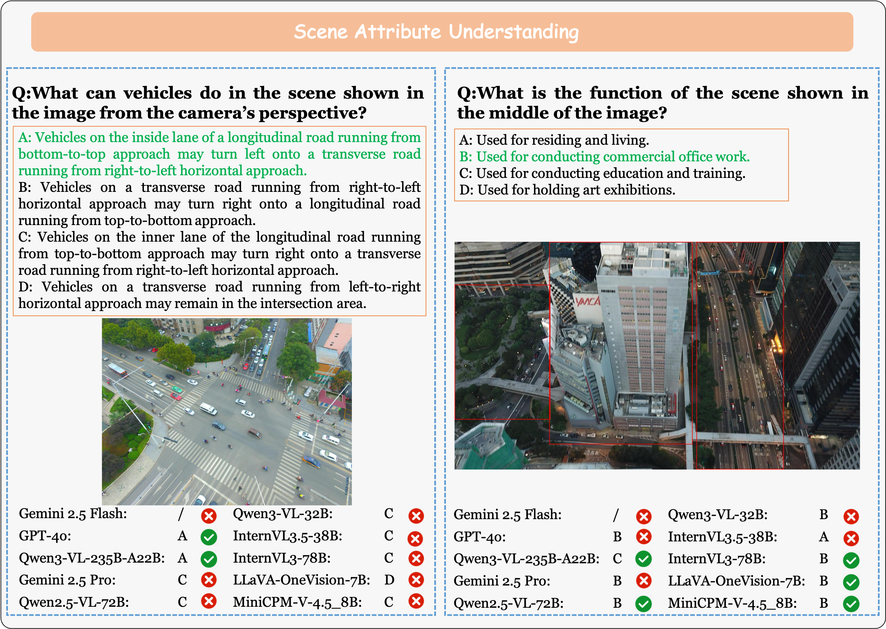
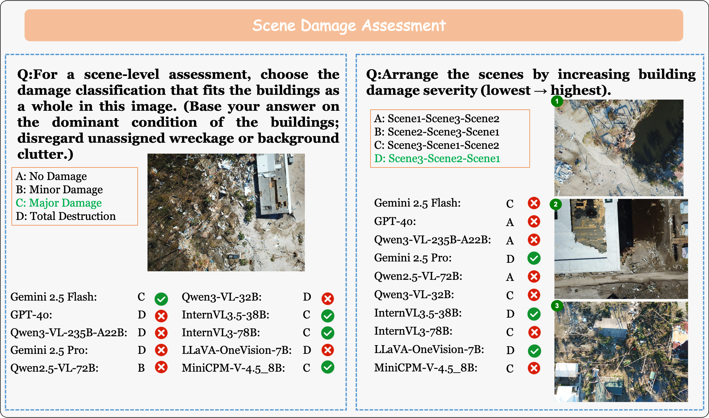
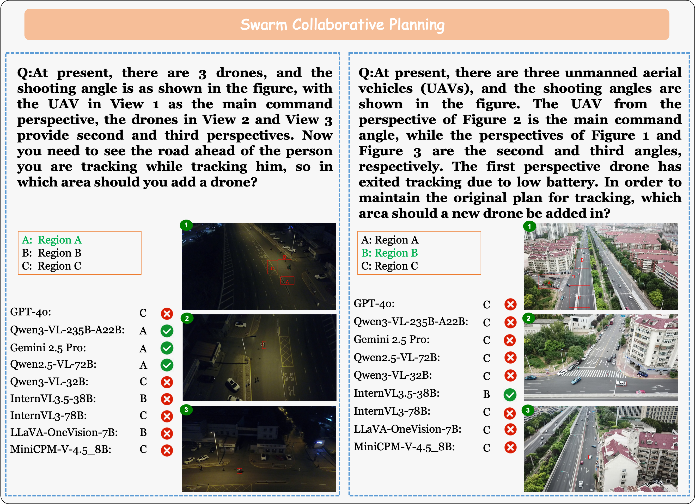
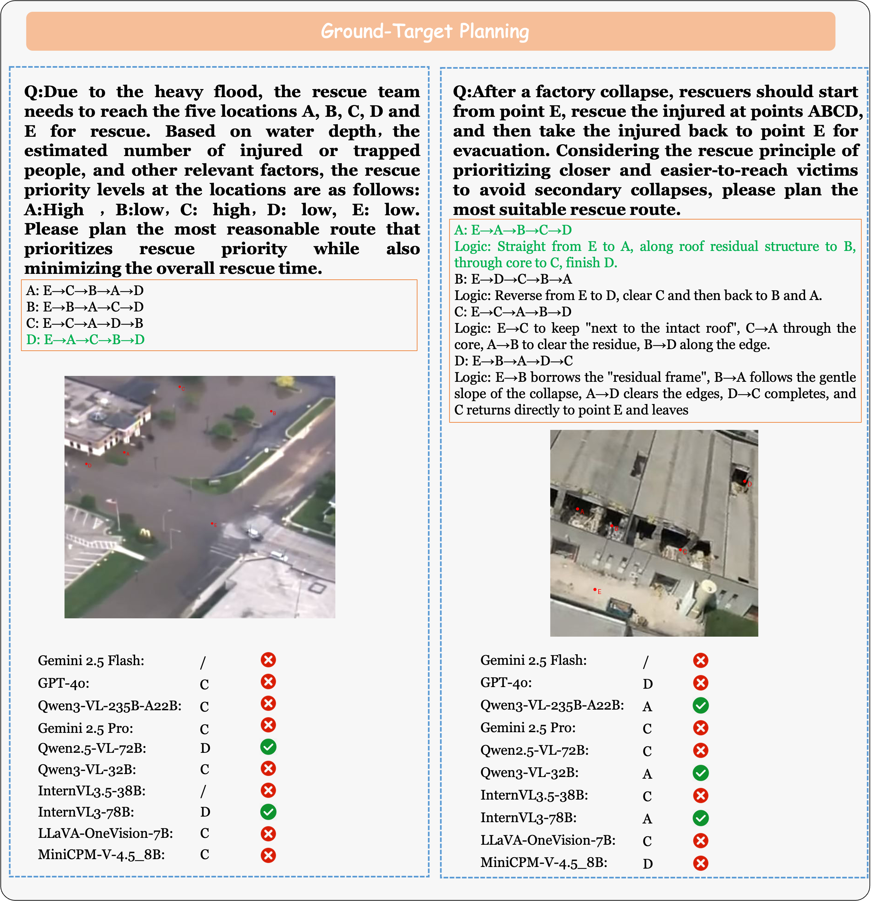

Introduction
In this work, we introduce MM-UAVBench, a comprehensive benchmark designed to evaluate the perception, cognition, and planning abilities of MLLMs in low-altitude UAV scenarios. It features three main characteristics:
- Comprehensive Task Design. It includes 19 tasks across three key capability dimensions and incorporates UAV-specific considerations, including multi-level cognition (object, scene, and event) and planning that involves both aerial and ground agents.
- Diverse Real-World Scenarios. We collect real-world UAV videos and images from diverse data sources, encompassing 1549 video clips and 2873 images with an average resolution of 1622 × 1033.
- High-quality Human Annotations. We manually annotate 16 tasks, while 3 additional tasks come from rule-based transformation of manual labels, yielding 5702 multiple-choice QA in total.
Dataset Example

Scene Classification

Orientation Classification

Environment State Classification

Urban OCR

Target Backtracking

Cross-Object Reasoning

Intent Analysis and Prediction

Scene Attribute Understanding

Scene Damage Assessment

Scene Analysis and Prediction

Event Tracing

Swarm Collaborative Planning

Ground Target Planning
BibTeX
@article{mmuavbench2025,
title={MM-UAVBench: How Well Do Multimodal Large Language Models See, Think, and Plan in Low-Altitude UAV Scenarios?},
author = {Shiqi Dai, Zizhi Ma, Zhicong Luo, Xuesong Yang, Yibin Huang, Wanyue Zhang, Chi Chen, Zonghao Guo, Wang Xu, Yufei Sun, Maosong Sun},
journal={arXiv preprint arXiv:2512.23219},
year={2025},
url={https://mm-uavbench.github.io/}
}